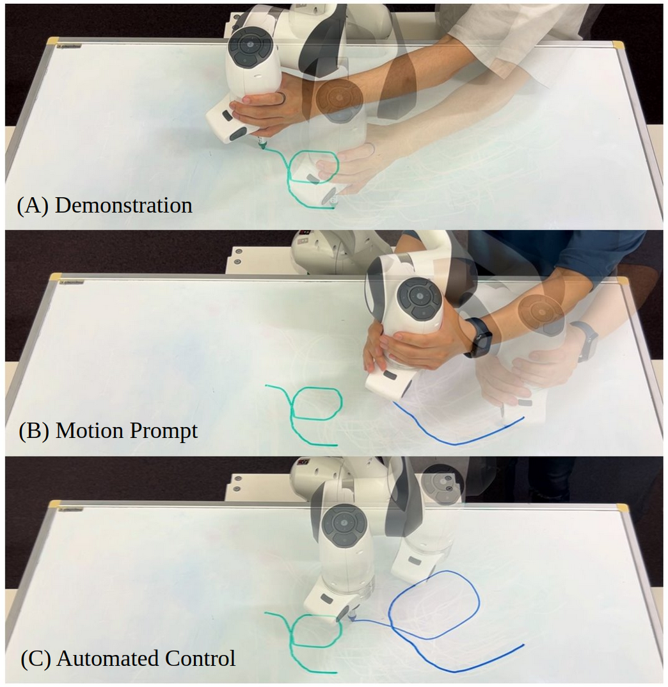

Learning from demonstration allows robots to acquire complex skills from human demonstrations, but conventional approaches often require large datasets and fail to generalize across coordinate transformations. In this paper, we propose Prompt2Auto, a geometry-invariant one-shot Gaussian process (GeoGP) learning framework that enables robots to perform human-guided automated control from a single motion prompt. A dataset-construction strategy based on coordinate transformations is introduced that enforces invariance to translation, rotation, and scaling, while supporting multi-step predictions. Moreover, GeoGP is robust to variations in the user’s motion prompt and supports multi-skill autonomy. We validate the proposed approach through numerical simulations with the designed user graphical interface and two real-world robotic experiments, which demonstrate that the proposed method is effective, generalizes across tasks, and significantly reduces the demonstration burden.
